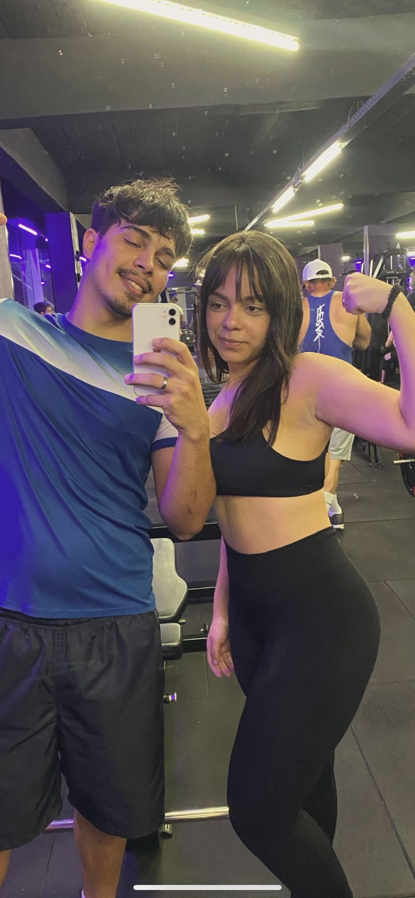
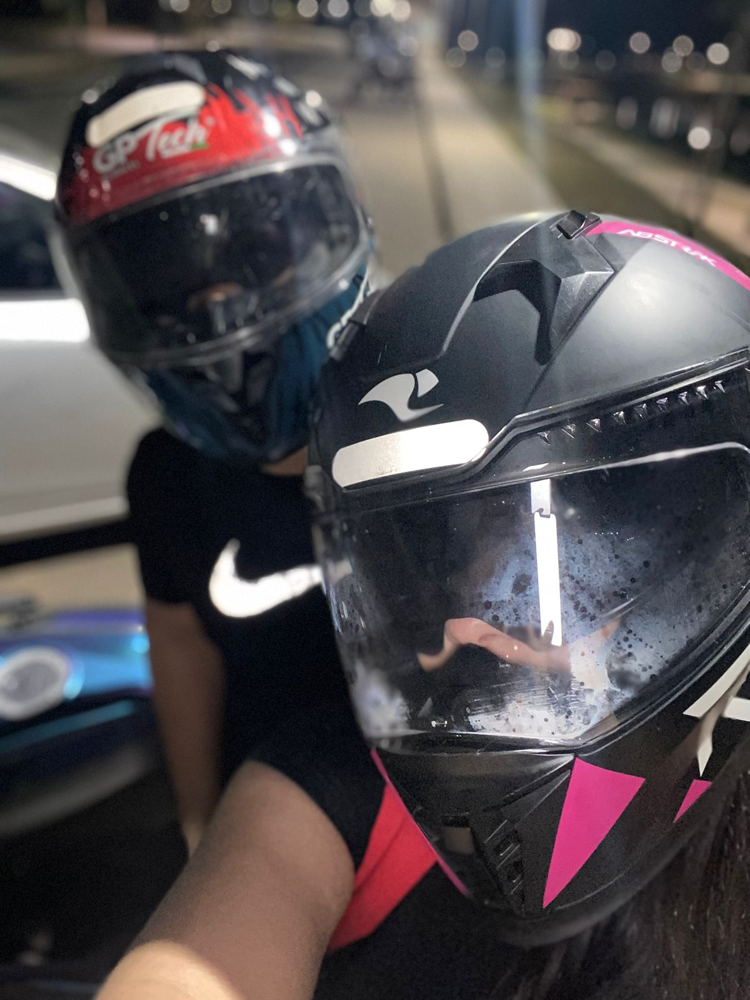
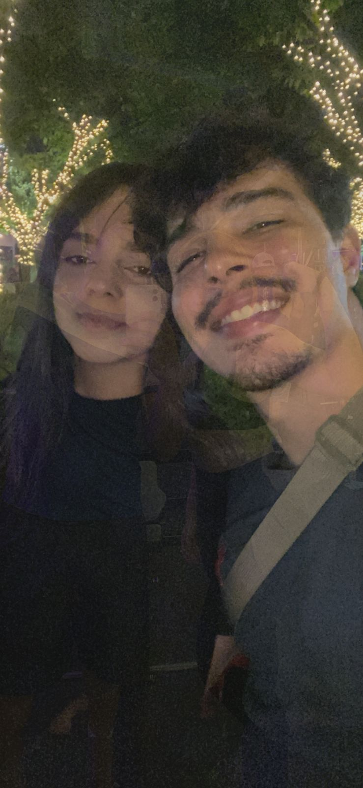
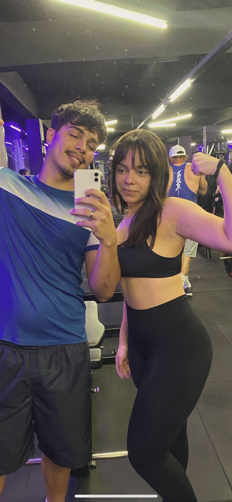
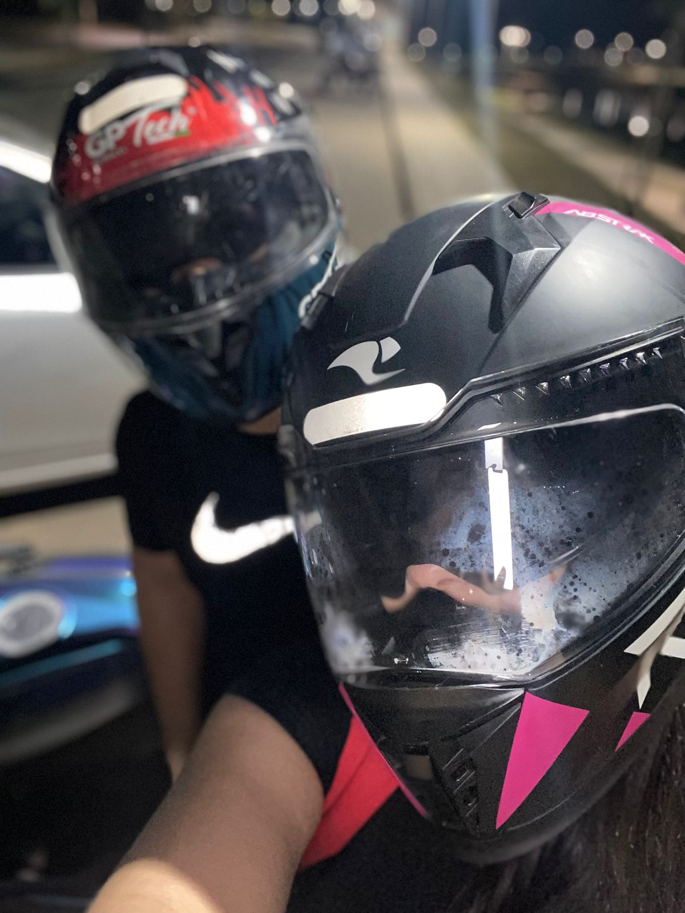
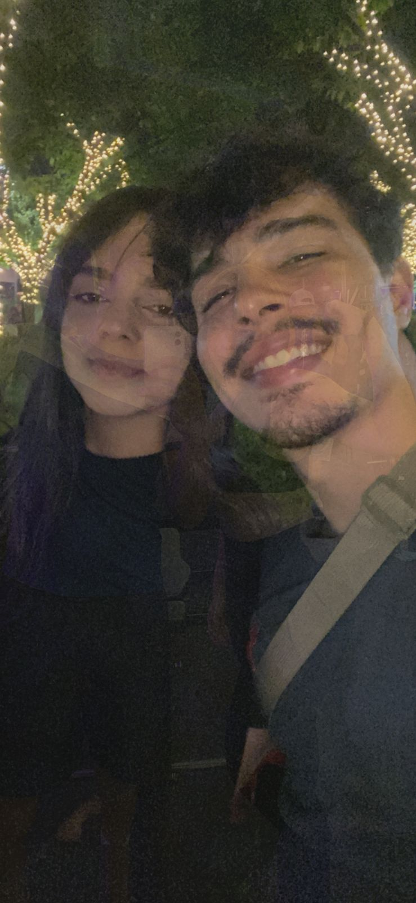

Obrigado por tudo meu amor ❤️
 





Eu nunca soube exatamente o que procurar no mundo. Andei por lugares, pessoas, fases… muita coisa passou, quase nada ficou. A vida foi me ensinando do jeito mais bruto que nem todo sorriso é abrigo, nem toda promessa é casa. Até que você apareceu. Sem barulho, sem anúncio, sem espetáculo. E, de um jeito simples, que eu nem percebi na hora, você virou o lugar onde tudo em mim cansado resolveu descansar. Em você, o mundo não grita. Em você, eu não preciso ser forte o tempo todo. Em você, eu posso falhar, ter medo, ser imperfeito e ainda assim ser recebido. Isso é abrigo. Não é parede, não é teto, não é proteção contra a chuva… é proteção contra o vazio. É ter onde pousar quando a alma pesa. É ter para onde voltar quando tudo desaba. Se um dia eu me perder de mim, que seja nos seus braços. Porque, no fim das contas, amor pra mim passou a ser isso: não a promessa de felicidade eterna, mas a certeza de que, mesmo nos dias mais escuros, eu tenho onde me proteger da tempestade. E esse lugar é você